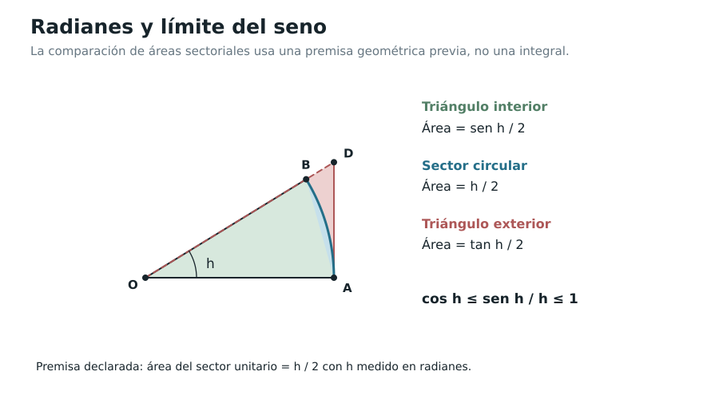

Capítulo 2. La derivada como operación
Índice del libro · Prefacio · Itinerarios
Exposición · Ejercicios · Soluciones · Notas históricas
Pregunta generadora. Si conocemos cómo varían dos funciones, ¿qué podemos deducir del cambio de su suma, su producto, su cociente o su composición? ¿Y cómo convertir ese conocimiento en un método para estudiar funciones cada vez más complejas?
En el capítulo anterior, una derivada era el resultado de examinar un problema local: el límite de los cocientes de diferencias de una función en un punto. Obtuvimos así pendientes de rectas tangentes, velocidades instantáneas y una caracterización mediante aproximación afín. Ahora necesitamos reconocer una estructura que aparece cuando construimos funciones nuevas a partir de funciones conocidas. La derivada no debe quedar reducida a una tabla de respuestas: es una operación sujeta a reglas que han de ser demostradas y cuyos dominios deben mantenerse a la vista.
Hay un obstáculo adicional. Las potencias, los logaritmos y las funciones trigonométricas son conocidas mucho antes de que el cálculo las reúna, pero conocer sus identidades algebraicas no basta para conocer sus derivadas. Veremos cómo se justifican los límites específicos que permiten diferenciarlas, evitando suponer de antemano el Teorema del Valor Medio (capítulo 3), la teoría general de series (capítulo 8) o el Teorema Fundamental del Cálculo (capítulo 6). Para la exponencial construiremos, de manera autocontenida, una serie particular: su convergencia y las operaciones que usemos se demostrarán aquí, sin postular reglas generales aún no establecidas.
2.1. De un valor derivado a una función derivada
Sea \(I\subseteq\mathbb R\) un intervalo abierto no vacío y \(f:I\to\mathbb R\). Si \(f\) es derivable en cada \(x\in I\), obtenemos una nueva función \(f':I\to\mathbb R\) definida por
\[ f'(x)=\lim_{h\to0}\frac{f(x+h)-f(x)}h, \]
con \(h\ne0\) y \(x+h\in I\). Escribiremos también \(Df=f'\) y, cuando \(y=f(x)\), \(dy/dx=f'(x)\). La primera forma acentúa que derivar es operar sobre funciones; la segunda conserva una notación histórica que resulta útil en cálculos compuestos. Ninguna permite dividir literalmente dos números llamados \(dy\) y \(dx\) sin justificar la operación que representan.
Definición 2.1 (EDC-C02-DEF-001). Designamos por \(\mathcal D(I)\) el conjunto de funciones reales derivables en cada punto de \(I\). El operador derivación es
\[ D:\mathcal D(I)\longrightarrow\mathbb R^I, \qquad Df=f'. \]
El codominio \(\mathbb R^I\) denota todas las funciones de \(I\) a \(\mathbb R\); no hemos afirmado que \(f'\) sea continua o que vuelva a pertenecer a \(\mathcal D(I)\). La función \(x\mapsto|x|\) ofrece una advertencia inmediata: puede fallar la derivabilidad en un punto interior. Más adelante veremos incluso derivadas que existen pero no son continuas.
Nuestro método consistirá en volver siempre al cociente incremental. Sólo después de demostrar una regla tendremos derecho a emplearla en otros ejemplos.
2.2. Sumas, productos y cocientes
Teorema 2.1 (reglas algebraicas; EDC-C02-THM-001). Sea \(a\) un punto interior de un dominio común \(D\subseteq\mathbb R\), y sean \(f,g:D\to\mathbb R\) derivables en \(a\). Para cualesquiera \(\alpha,\beta\in\mathbb R\) se tiene
\[ (\alpha f+\beta g)'(a)=\alpha f'(a)+\beta g'(a), \]
\[ (fg)'(a)=f'(a)g(a)+f(a)g'(a). \]
Si además \(g(a)\ne0\), el cociente \(f/g\) está definido en un entorno de \(a\) y
\[ \left(\frac fg\right)'(a) =\frac{f'(a)g(a)-f(a)g'(a)}{g(a)^2}. \]
Demostración. La primera identidad surge directamente de la linealidad de las diferencias y del álgebra de límites de C00. Para el producto sumamos y restamos \(f(a)g(a+h)\):
\[ \begin{aligned} &\frac{f(a+h)g(a+h)-f(a)g(a)}h\\ &\qquad=\frac{f(a+h)-f(a)}h\,g(a+h) +f(a)\frac{g(a+h)-g(a)}h. \end{aligned} \]
Como derivabilidad implica continuidad (EDC-C01-THM-003), \(g(a+h)\to g(a)\), y los límites producen la fórmula. Para el cociente, \(g(a)\ne0\) y continuidad garantizan \(g(a+h)\ne0\) para \(h\) suficientemente pequeño. Calculamos
\[ \frac{f(a+h)/g(a+h)-f(a)/g(a)}h =\frac{g(a)[f(a+h)-f(a)]-f(a)[g(a+h)-g(a)]}{h\,g(a+h)g(a)}. \]
El límite existe y el denominador tiende a \(g(a)^2\ne0\). \(\square\)
En particular, \((cf)'=cf'\) y \((f+g)'=f'+g'\). La derivación es lineal, pero no multiplica valores: la expresión \((fg)'=f'g'\) suele ser falsa. Tampoco vale \((f/g)'=f'/g'\).
Proposición 2.1 (EDC-C02-PRP-001). La derivada de una función constante es cero, la de \(x\mapsto x\) es \(1\) y, para cada entero \(n\ge1\),
\[ \frac{d}{dx}x^n=nx^{n-1}\qquad(x\in\mathbb R). \]
Demostración. Las primeras dos afirmaciones salen de la definición. Si la fórmula vale para \(n\), la regla del producto aplicada a \(x^{n+1}=x^n x\) da \((n+1)x^n\). La inducción arranca en \(n=1\). \(\square\)
Para un exponente entero negativo, \(x^{-n}=1/x^n\) se estudia en \(x\ne0\); la regla del cociente produce \((x^{-n})'=-n x^{-n-1}\). En ningún caso una fórmula justifica evaluar una función fuera de su dominio.
2.3. La composición y la regla de la cadena
El problema cambia cuando una función se evalúa dentro de otra. Si una magnitud depende de una segunda y ésta depende de una tercera, ¿cómo se combinan sus variaciones locales?
Teorema 2.2 (regla de la cadena; EDC-C02-THM-002). Sean \(I,J\subseteq\mathbb R\) intervalos abiertos, \(g:I\to J\) y \(f:J\to\mathbb R\). Si \(g\) es derivable en \(a\in I\) y \(f\) es derivable en \(b=g(a)\), entonces \(f\circ g\) es derivable en \(a\) y
\[ (f\circ g)'(a)=f'(g(a))\,g'(a). \]
Demostración. El teorema de aproximación lineal de C01 permite escribir, para \(u\) próximo a \(0\),
\[ f(b+u)-f(b)=u\,[f'(b)+\eta(u)], \qquad \eta(u)\longrightarrow0, \]
con la convención \(\eta(0)=0\). Esta identidad incluye el caso \(u=0\). Tomemos \(u=g(a+h)-g(a)\). Como \(g\) es continua en \(a\), \(u\to0\). Entonces
\[ \frac{f(g(a+h))-f(g(a))}h =\frac{g(a+h)-g(a)}h \,[f'(b)+\eta(g(a+h)-g(a))]. \]
El primer factor tiende a \(g'(a)\) y el segundo a \(f'(b)\). Esta prueba funciona incluso si \(g(a+h)=g(a)\) para infinitos incrementos: no hemos dividido por \(g(a+h)-g(a)\). \(\square\)
Por ejemplo, si \(u(x)=x^2+1\) y \(f(t)=t^3\), entonces
\[ \frac d{dx}(x^2+1)^3=3(x^2+1)^2(2x). \]
Un contraste útil: \(f(t)=|t|\) no es derivable en \(0\), pero \(f(g(x))\) con \(g(x)=x^2\) coincide con \(x^2\) y sí es derivable en \(0\). Las hipótesis de la regla de la cadena son suficientes, no condiciones necesarias para cada composición particular.
Definición 2.2 (EDC-C02-DEF-002). Una expresión de la forma \(f\circ g\), con dominio efectivo \(\{x\in\operatorname{dom}g:g(x)\in\operatorname{dom}f\}\), es una composición admisible. El dominio efectivo debe determinarse antes de derivar. Así, \(\sqrt{1-x^2}\) está definida sobre \([-1,1]\), pero no tendrá derivada real bilateral en los extremos de ese intervalo.
2.4. La derivada de la función inversa
Conocer el movimiento de \(f\) no debe confundirse con conocer el de su inversa. Los incrementos se intercambian, pero sólo si realmente existe una rama inversa y ésta aproxima correctamente su punto correspondiente.
Teorema 2.3 (derivada de la inversa; EDC-C02-THM-003). Sea \(I\) un intervalo abierto, \(f:I\to\mathbb R\) continua y estrictamente monótona, y sea \(a\in I\). Si \(f\) es derivable en \(a\) y \(f'(a)\ne0\), entonces su inversa \(F:f(I)\to I\) es derivable en \(b=f(a)\) y
\[ F'(b)=\frac1{f'(a)}. \]
Demostración. La continuidad y monotonía estricta, junto con el teorema del valor intermedio (EDC-C00-THM-006), hacen que \(f(I)\) sea un intervalo y que \(F\) sea continua en \(b\). Podemos justificar esta última afirmación directamente: dados \(a_-<a<a_+\) en \(I\), la monotonía sitúa todos los valores suficientemente próximos a \(f(a)\) entre \(f(a_-)\) y \(f(a_+)\), y por tanto sus preimágenes entre \(a_-\) y \(a_+\). Haciendo aproximarse \(a_\pm\) a \(a\), se obtiene \(F(y)\to a\) cuando \(y\to b\).
Para \(y\ne b\) en \(f(I)\), escribamos \(x=F(y)\ne a\). Así,
\[ \frac{F(y)-F(b)}{y-b} =\frac{x-a}{f(x)-f(a)} =\left[\frac{f(x)-f(a)}{x-a}\right]^{-1}. \]
La expresión entre corchetes se aproxima a \(f'(a)\ne0\) cuando \(x\to a\), de modo que su recíproco converge a \(1/f'(a)\). \(\square\)
La hipótesis \(f'(a)\ne0\) no es una formalidad. Si \(f(x)=x^3\), su inversa es \(F(y)=\sqrt[3]{y}\): en \(a=0\), \(f'(0)=0\), y el cociente \(F(h)/h=|h|^{-2/3}\) no tiene límite real finito. En cambio, para \(f(x)=x^2\) restringida a \((0,\infty)\), obtenemos
\[ \frac d{dy}\sqrt y=\frac1{2\sqrt y},\qquad y>0. \]
La derivada no se extiende como número real finito a \(y=0\).
2.5. Derivar relaciones sin despejar primero
Algunas curvas se describen por una relación entre dos cantidades y no por una sola fórmula explícita. Pensemos en la circunferencia de radio \(r>0\):
\[ x^2+y^2=r^2. \]
Si en un intervalo \(J\subset(-r,r)\) elegimos una rama diferenciable \(y=y(x)\) que satisfaga la relación, las reglas ya demostradas dan
\[ 2x+2y(x)y'(x)=0. \]
Si \(y(x)\ne0\) concluimos \(y'(x)=-x/y(x)\). Esta forma evita despejar una raíz antes de empezar, pero no prueba por sí sola que exista una rama diferenciable. Para justificarla aquí basta escoger la rama superior explícita \(y(x)=\sqrt{r^2-x^2}\) en \((-r,r)\), cuya diferenciabilidad se deduce de los teoremas de inversa y cadena; la inferior se trata de igual modo.
Proposición 2.2 (derivación implícita condicionada; EDC-C02-PRP-002). Si \(P(x,y)\) es un polinomio y \(y:J\to\mathbb R\) es una función derivable sobre un intervalo abierto \(J\) tal que \(P(x,y(x))=0\), la identidad se puede derivar término a término mediante producto y cadena. Si el coeficiente que multiplica a \(y'(x)\) en la identidad obtenida es no nulo, esa ecuación determina \(y'(x)\). Esta proposición no afirma existencia de \(y\), ni unicidad de la rama ni un teorema general de la función implícita.
Demostración. Un monomio \(c x^m y(x)^n\) es producto de funciones derivables, por las reglas de los §§2.2–2.3 y la derivación de potencias enteras no negativas. La suma finita de estos monomios es derivable. Como la función compuesta \(P(x,y(x))\) es idénticamente cero, su derivada vale cero. La resolución algebraica final requiere que el coeficiente de \(y'\) no se anule. \(\square\)
2.6. Un problema que las reglas no resuelven: la exponencial
Hasta aquí sabemos combinar derivadas, pero el problema de encontrar la derivada de una función nueva sigue abierto. La exponencial constituye un buen laboratorio: buscamos una función continua y positiva que convierta sumas de argumentos en productos y cuya tasa local vuelva a ser la propia función.
Construiremos ese objeto sin recurrir a una integral todavía indefinida. Tampoco tomaremos como demostrada una teoría general de series infinitas: justificaremos cada paso necesario para esta serie concreta.
Lema 2.1 (serie exponencial particular; EDC-C02-LEM-001). Para cada \(x\in\mathbb R\) converge absolutamente la sucesión de sumas parciales
\[ E_N(x)=\sum_{n=0}^{N}\frac{x^n}{n!},\qquad 0!=1. \]
Su límite, denotado por \(E(x)\), satisface \(E(0)=1\) y
\[ E(x+y)=E(x)E(y)\qquad (x,y\in\mathbb R). \]
Demostración. Fijemos \(R>0\). Si \(N+2>R\), para \(|x|\le R\) la cola de términos absolutos está acotada por una progresión geométrica:
\[ \sum_{n=N+1}^{\infty}\frac{|x|^n}{n!} \le\frac{R^{N+1}}{(N+1)!} \frac1{1-R/(N+2)}. \]
El factor \(R^{N+1}/(N+1)!\) tiende a cero, pues a partir de cierto índice cada cociente de términos consecutivos es menor que \(1/2\). En consecuencia, las sumas son de Cauchy y convergen en \(\mathbb R\) por completitud (la equivalencia entre completitud por supremo y criterio de Cauchy para sucesiones se puede deducir de C00; alternativamente, aquí las sumas absolutas no negativas son crecientes y acotadas por la comparación geométrica, y el Teorema 0.2 basta).
Para \(x,y\) fijados, la suma de valores absolutos de todos los términos \(x^py^q/(p!q!)\) es
\[ \sum_{p,q\ge0}\frac{|x|^p|y|^q}{p!q!}=E(|x|)E(|y|)<\infty. \]
Esta igualdad se entiende como límite de sumas rectangulares finitas de términos no negativos. La convergencia absoluta permite agrupar los términos de la suma doble por \(p+q=n\): la contribución que queda fuera de un cuadrado \(0\le p,q\le N\) se acota por las colas positivas correspondientes, que tienden a cero. La fórmula binomial finita da entonces
\[ \begin{aligned} E(x)E(y)&=\sum_{n=0}^{\infty}\sum_{p=0}^{n}\frac{x^py^{n-p}}{p!(n-p)!}\\ &=\sum_{n=0}^{\infty}\frac{(x+y)^n}{n!}=E(x+y). \end{aligned} \]
No se ha derivado ni integrado término a término ninguna serie de funciones. \(\square\)
Proposición 2.3 (EDC-C02-PRP-003). La función \(E\) es positiva, continua y estrictamente creciente; \(E(\mathbb R)=(0,\infty)\).
Demostración. La identidad anterior implica \(E(x)E(-x)=E(0)=1\), de modo que \(E(x)\ne0\). Como \(E(x)=E(x/2)^2\), se tiene \(E(x)>0\). Para \(h>0\), todos los términos de la serie que define \(E(h)\) son positivos, y \(E(h)>1+h>1\). Si \(y>x\), entonces \(E(y)=E(x)E(y-x)>E(x)\), probando crecimiento estricto.
Para \(|h|\le1\), la serie absoluta da \(|E(h)-1|\le\sum_{n\ge1}|h|^n/n!\le|h|E(1)\), de donde \(E(h)\to1\) al tender \(h\) a cero. Por \(E(x+h)=E(x)E(h)\), \(E\) es continua en todo \(x\). Además \(E(x)\ge1+x\to\infty\) para \(x\to+\infty\), mientras \(E(-x)=1/E(x)\to0\) para \(x\to+\infty\). Por continuidad y el teorema del valor intermedio, su imagen es exactamente \((0,\infty)\). \(\square\)
Teorema 2.4 (derivada de la exponencial; EDC-C02-THM-004). Para todo \(x\in\mathbb R\),
\[ E'(x)=E(x). \]
Demostración. Para \(|h|\le1\),
\[ \left|\frac{E(h)-1}{h}-1\right| \le\frac1{|h|}\sum_{n=2}^{\infty}\frac{|h|^n}{n!} \le\frac{|h|}{2}E(1)\longrightarrow0, \]
pues \((m+2)!\ge2m!\). Así, \(E'(0)=1\). Por la identidad aditiva,
\[ \frac{E(x+h)-E(x)}h =E(x)\frac{E(h)-1}h\longrightarrow E(x). \]
Se sigue la afirmación. \(\square\)
Definición 2.3 (EDC-C02-DEF-003). Escribimos \(e=E(1)\) y \(e^x=E(x)\), \(x\in\mathbb R\). La definición es compatible con las potencias racionales ordinarias, pues \((E(m/n))^n=E(m)=e^m\) y \(E(m/n)>0\). No se ha supuesto previamente que \(e^x\) tenga derivada \(e^x\): esa propiedad acaba de demostrarse.
Esta construcción prepara una comparación que el capítulo 8 retomará: converger como suma infinita no equivale, en general, a permitir derivar una serie término a término. Aquí no hemos utilizado ese intercambio, sino una estimación de la cola y la identidad multiplicativa especial de \(E\).
2.7. El logaritmo y las potencias reales
La función \(E\) es continua, estrictamente creciente y transforma \(\mathbb R\) sobre \((0,\infty)\). Posee, por tanto, una inversa en todo el semieje positivo.
Definición 2.4 (EDC-C02-DEF-004). Llamamos logaritmo natural a \(\ln:(0,\infty)\to\mathbb R\), la inversa de \(E\): \(\ln(E(x))=x\) y \(E(\ln y)=y\) para \(y>0\). Para \(a>0\) definimos la función exponencial de base \(a\) por \(a^x=E(x\ln a)\); si \(a\ne1\), definimos \(\log_a y=\ln y/\ln a\), \(y>0\).
De \(E(u+v)=E(u)E(v)\) y su inyectividad se obtiene
\[ \ln(xy)=\ln x+\ln y\qquad(x,y>0). \]
Teorema 2.5 (logaritmo y potencia real; EDC-C02-THM-005). Para \(x>0\), \(a>0\) y \(r\in\mathbb R\),
\[ (\ln x)'=\frac1x,\qquad (a^x)'=a^x\ln a,\qquad (x^r)'=r x^{r-1}, \]
siempre que \(x^r\) se entienda, para base positiva, como \(E(r\ln x)\).
Demostración. El Teorema 2.3, aplicado a \(E\) en \(\ln x\) y a \(E'(\ln x)=E(\ln x)=x>0\), da \((\ln x)'=1/x\). Por la regla de la cadena y el Teorema 2.4,
\[ \frac d{dx}E(x\ln a)=E(x\ln a)\ln a. \]
Finalmente, para \(x>0\),
\[ \frac d{dx}E(r\ln x)=E(r\ln x)\frac r x=rx^{r-1}. \]
\(\square\)
Por ejemplo, \((\sqrt{x})'=1/(2\sqrt{x})\) si \(x>0\), como ya dedujimos por la regla de la inversa. La función \(x\mapsto\ln|x|\) está definida para \(x\ne0\) y su derivada allí es \(1/x\), mediante la cadena sobre cada semieje; no debe confundirse con \(\ln x\), definida sólo para \(x>0\).
Nota de dominio. La expresión \(x^r\) para \(x<0\) puede ser real para algunos exponentes racionales, pero no se deduce de la definición general \(E(r\ln x)\). Cualquier ampliación a bases negativas exige un dominio y una justificación propios. En \(x=0\), incluso para \(r>0\), la existencia de la derivada debe analizarse por separado; la fórmula del teorema no lo incluye.
2.8. Por qué importan los radianes: seno y coseno
Las fórmulas de adición de la trigonometría se conocen sin cálculo diferencial:
\[ \sin(x+h)=\sin x\cos h+\cos x\sin h, \]
\[ \cos(x+h)=\cos x\cos h-\sin x\sin h. \]
Para derivarlas basta estudiar el comportamiento de \(\sin h/h\) y \((\cos h-1)/h\) en el origen. Pero el primer límite depende de la unidad angular.
Contrato geométrico previo (MAT-01). La prueba siguiente emplea las identidades trigonométricas de adición y las reglas elementales de áreas poligonales: fórmula del triángulo, monotonía bajo inclusión y aditividad para piezas sin solapamiento interior. También emplea un antecedente de geometría circular: un sector del círculo unitario que subtiende un ángulo de \(h\) radianes tiene área \(h/2\). Esta relación puede obtenerse en geometría euclídea mediante agotamiento poligonal, pero no se demuestra aquí la existencia general del área sectorial ni su normalización. Es una premisa geométrica expresamente admitida, no una aplicación de la integral de Riemann aún indefinida ni una consecuencia del axioma del supremo de C00.
Lema 2.2 (normalización circular; EDC-C02-LEM-002). Si los argumentos trigonométricos se miden en radianes, entonces
\[ \lim_{h\to0}\frac{\sin h}{h}=1, \qquad \lim_{h\to0}\frac{\cos h-1}{h}=0. \]
Demostración geométrica. Para \(0<h<\pi/2\), el triángulo inscrito bajo el arco de la circunferencia unidad, el sector circular y el triángulo exterior determinado por la tangente tienen áreas ordenadas. La geometría elemental del círculo, con ángulos en radianes y área del sector unitario igual a \(h/2\), da
\[ \frac{\sin h}{2}\le\frac h2\le\frac{\tan h}{2}, \qquad\text{luego}\qquad \cos h\le\frac{\sin h}{h}\le1. \]
El triángulo interior tiene área \(\sin h/2\), el sector área \(h/2\) por la premisa geométrica declarada, y el triángulo exterior área \(\tan h/2\). El orden de inclusión de estas figuras justifica las desigualdades condicionalmente a aquella premisa. No usamos integrales ni derivadas en el argumento. Además, \(0\le\sin h\le h\) y \(\cos h=\sqrt{1-\sin^2h}\to1\), por lo que el encajonamiento da el primer límite por la derecha; la imparidad del seno lo extiende al lado izquierdo. Finalmente,
\[ \frac{\cos h-1}{h}=-\frac{\sin^2h}{h(1+\cos h)}\longrightarrow0, \]
pues \(|\sin h|\le|h|\) cerca de cero. \(\square\)
El alcance exacto es éste: los límites de seno y coseno quedan demostrados a partir de las identidades trigonométricas y de la medida geométrica previa de sectores. Una construcción independiente de esa medida mediante polígonos inscritos y circunscritos constituiría un desarrollo adicional de geometría. Esta dependencia explícita no debilita las conclusiones analíticas, pero impide describir el lema como demostrado únicamente desde la completitud de \(\mathbb R\).

Teorema 2.6 (derivadas trigonométricas; EDC-C02-THM-006). Para todo \(x\in\mathbb R\),
\[ (\sin x)'=\cos x, \qquad (\cos x)'=-\sin x. \]
En cada punto donde \(\cos x\ne0\),
\[ (\tan x)'=\frac1{\cos^2x}=1+\tan^2x. \]
Demostración. De las fórmulas de adición,
\[ \frac{\sin(x+h)-\sin x}h =\sin x\frac{\cos h-1}h+\cos x\frac{\sin h}h. \]
Por el Lema 2.2, su límite es \(\cos x\). Análogamente,
\[ \frac{\cos(x+h)-\cos x}h =\cos x\frac{\cos h-1}h-\sin x\frac{\sin h}h \longrightarrow-\sin x. \]
La fórmula de la tangente sale de la regla del cociente aplicada a \(\sin x/\cos x\) en los intervalos donde \(\cos x\ne0\). \(\square\)
Aplicando la regla de la cadena, para \(g\) derivable donde corresponda,
\[ (\sin\circ g)'=(\cos\circ g)g',\qquad (\cos\circ g)'=-(\sin\circ g)g'. \]
Estas fórmulas no son válidas si se reemplazan radianes por grados sin el factor de conversión \(\pi/180\).
2.9. Funciones trigonométricas inversas
En \((-\pi/2,\pi/2)\) el seno es estrictamente creciente: si \(u<v\) allí, la identidad
\[ \sin v-\sin u=2\cos\!\left(\frac{u+v}2\right) \sin\!\left(\frac{v-u}2\right)>0 \]
lo demuestra geométricamente, sin apelar al Teorema del Valor Medio. En ese intervalo el seno tiene inversa, denominada \(\arcsin\), cuyo dominio es \((-1,1)\). Para la rama usual \(\arccos:(-1,1)\to(0,\pi)\) se procede del mismo modo con el coseno estrictamente decreciente; la tangente es estrictamente creciente en \((-\pi/2,\pi/2)\) y su imagen es \(\mathbb R\).
Teorema 2.7 (EDC-C02-THM-007). En los dominios abiertos indicados,
\[ \begin{aligned} (\arcsin x)'&=\frac1{\sqrt{1-x^2}},&&-1<x<1,\\ (\arccos x)'&=-\frac1{\sqrt{1-x^2}},&&-1<x<1,\\ (\arctan x)'&=\frac1{1+x^2},&&x\in\mathbb R. \end{aligned} \]
Demostración. En la rama \(\arcsin\), la regla de la inversa da \(1/\cos(\arcsin x)\); este coseno es positivo y vale \(\sqrt{1-x^2}\). En la rama \(\arccos\), el seno es positivo y la derivada del coseno vale \(-\sin\), lo que produce el signo negativo. Para \(\arctan\), el recíproco de \((\tan y)'=1+\tan^2y\) evaluado en \(y=\arctan x\) es \(1/(1+x^2)\). \(\square\)
La derivada de \(\arcsin x\) se hace ilimitada cuando \(x\to1^-\), pero esto no autoriza a afirmar una derivada finita en el extremo \(x=1\): allí tampoco existe un entorno bilateral dentro del dominio de su rama cerrada.
2.10. Una función derivable cuya derivada no es continua
En C01 probamos que derivabilidad implica continuidad de la función original. Sería tentador concluir que la nueva función \(f'\) es también continua. No es así.
Definamos
\[ f(x)=\begin{cases} x^2\sin(1/x),&x\ne0,\\ 0,&x=0. \end{cases} \]
El cociente incremental en el origen es \(f(h)/h=h\sin(1/h)\to0\), pues \(|h\sin(1/h)|\le|h|\). Así \(f'(0)=0\). Para \(x\ne0\), producto y cadena dan
\[ f'(x)=2x\sin(1/x)-\cos(1/x). \]
Si tomamos \(x_n=1/(2\pi n)\) y \(y_n=1/((2n+1)\pi)\), ambos tienden a cero; sin embargo, \(f'(x_n)=-1\) y \(f'(y_n)=1\). Por tanto, \(f'\) no tiene límite en \(0\) y no es continua allí. Esta discontinuidad no contradice el teorema de C01: \(f\) sí es continua en \(0\).
El ejemplo también nos advierte que no es lícito aplicar a toda derivada cualquier propiedad que haya sido probada sólo para funciones continuas.
2.11. Interpretar fórmulas: dominios, unidades y sensibilidad
En una magnitud física, \(f'(x)\) conserva las unidades de \(f\) divididas por las de \(x\). La regla de la cadena respeta esa estructura. Si \(s\) mide metros, \(t\) segundos y \(s=s(u(t))\), el producto \((ds/du)(du/dt)\) tiene unidades de metros por segundo, siempre que los dominios de las funciones estén correctamente identificados.
Una medida adimensional de sensibilidad es la elasticidad: para \(x\ne0\) y \(f(x)\ne0\) definimos
\[ \mathcal E_f(x)=\frac{x f'(x)}{f(x)}. \]
Por ejemplo, si \(f(x)=x^r\) con \(x>0\), la elasticidad vale constantemente \(r\). Si \(f(x)=a^x\), con \(a>0\) y \(x\ne0\), vale \(x\ln a\). En ambos casos estamos interpretando derivadas ya demostradas, no infiriendo una ley dinámica desconocida.
La regla de la cadena puede expresarse con notación de Leibniz, \(dy/dx=(dy/du)(du/dx)\), cuando \(y=f(u)\), \(u=g(x)\) son derivables en los puntos pertinentes. Esa forma refleja la composición de razones de cambio; una cancelación puramente tipográfica de símbolos no sustituye la prueba de §2.3.
2.12. Síntesis y frontera del capítulo
Hemos construido una teoría operativa local:
\[ \boxed{\begin{gathered} \text{derivadas de las funciones componentes}\\ \Downarrow\\ \text{sumas, productos, cocientes y composiciones}\\ \Downarrow\\ \text{derivadas de expresiones nuevas}. \end{gathered}} \]
El repertorio ya incluye potencias reales sobre \((0,\infty)\), exponenciales, logaritmos y funciones trigonométricas en sus dominios precisos. Se demostró además un caso particular de construcción por serie sin tomar como permiso universal el intercambio entre límites y operaciones.
Todavía no hemos demostrado que el signo de \(f'\) en todo un intervalo gobierne globalmente la monotonía, ni que una función continua y derivable alcance entre dos puntos una pendiente derivada igual a su cambio medio. Tales afirmaciones son el problema del capítulo 3, donde surgirán los teoremas de Rolle y del valor medio. Tampoco hemos integrado ninguna función.
Mapa explícito de dependencias
- De C00: estructura de \(\mathbb R\), completitud, álgebra de límites, convergencia monótona, continuidad, criterio secuencial y valor intermedio.
- De C01: definición de derivada en punto interior, derivabilidad implica continuidad y caracterización por aproximación afín.
- Aportaciones de C02:
EDC-C02-THM-001--007, reglas y construcciones aquí demostradas; medida de ángulo en radianes como herramienta de geometría previa. - No utilizado: Rolle, teorema del valor medio, integración de Riemann, Teorema Fundamental, Taylor ni resultados generales de análisis funcional.
- Origen historiográfico de las notaciones y de las funciones: notas históricas y control de fuentes.
Trabajo del lector
Los ejercicios de este capítulo están organizados por objetivos, desde identificación de dominios y composición hasta demostraciones y contraejemplos. Las soluciones desarrolladas permanecen separadas de la exposición para preservar el valor del trabajo independiente.